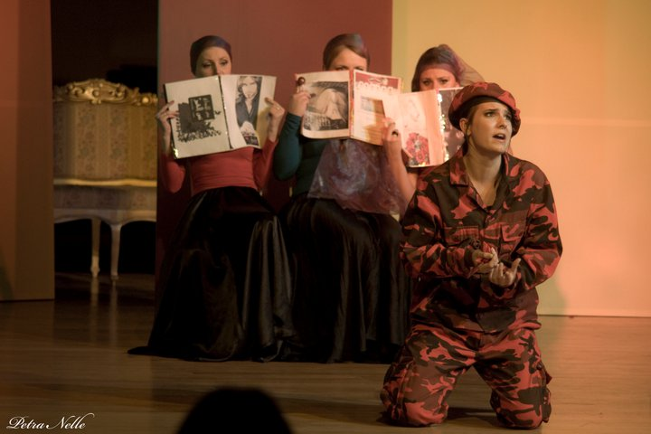
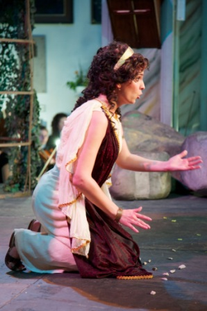
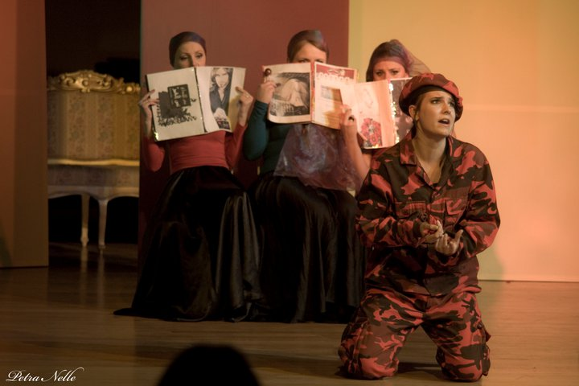
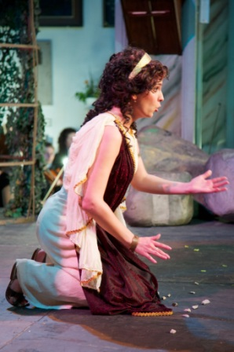

Joanna Bortel
OPERA
- G. Bizet Carmen (Carmen)
- A. Dvořák Rusalka (Ježibaba)
- P. Tchaikovsky Eugene Oniegin (Olga)
- W. A.Mozart Die Zauberflöte (III Dame)
- S. Moniuszko Straszny Dwór (Jadwiga)
- G.F. Haendel Xerxes (Amastre)
- J. Strauss Der Fledermaus (Orlofsky)
- J. Offenbach Les Contes d'Hoffmann (Niclausse)
- G. Verdi Otello (Emilia)
- G. Verdi Rigoletto (Maddalena)
- J.D. Holland Agatka (Plociuchowa)
- Tolomeo et AlessandroD. Scarlatti
(ovvero La Corona disprezzata) (Dorisbe) - E. Humperdinck Hänsel und Gretel (Hänsel)
- J. Massenet Werther (Charlotta)
- G. Donizetti Lucrezia Borgia (Orsini)
ORATORIO
- J.S. Bach Magnificat BWV 243
- J.S. Bach Weihnachtsoratorium BWV 248
- J.S. Bach Messe h-moll BWV 232
- J.S. Bach Johannespassion BWV 245
- J.S. Bach Matthäuspassion BWV 244
- J.S. Bach Alles nur nach Gottes Willen BWV 72
- J.S. Bach Bisher habt ihr nichts gebeten in meinem Namen BWV 87
- J.S. Bach Bringet dem Herrn Ehre seines Namens BWV 148
- J.S. Bach Vergnügte Ruh, beliebte Seelenlust BWV 170
- J.S. Bach Gott soll allein mein Herze haben BWV 169
- A. Dvořák Stabat Mater op.58
- J. Haydn Stabat Mater
- G.F. Haendel Messiah BWV 56
- W. Kilar Missa pro pace
- G. Rossini Petite Messe Solennelle
- W.A. Mozart Krönungsmesse KV 317
- W.A. Mozart Missa brevis et solemnis KV 220
- W.A. Mozart Requiem KV 626
- G.B. Pergolesi Stabat Mater
- A. Vivaldi Cantata Cessate omai, cessate RV 684
- A. Vivaldi Stabat Mater RV 621
- A. Vivaldi Beatus vir RV 598
- L.van Beethoven Messe in C Major op.86
- L.van Beethoven Fantasy in C Minor op.80
- L.van Beethoven Symphony No. 9
- G. Verdi Requiem
"(...)Altistin Joanna Bortel verlieh dem Werk Bachs
mit ihrem dunklen Stimmtimbre eine besondere Note."
mit ihrem dunklen Stimmtimbre eine besondere Note."
""


 



Personal | Performance

Urlica (Un ballo in maschera)
G. Verdi
G. Verdi
The Countess (Pique Dame)
P. Tchaikovsky
P. Tchaikovsky
Ježibaba - Cury mury fuk (Rusalka)
A.Dvorák
A.Dvorák
Ježibaba - Lidskou krvi musis smyti (Rusalka)
A.Dvorák
A.Dvorák
Cancion de cuna para dormir a un negrito
Xavier Montsalvatge
Xavier Montsalvatge
+48 692 487 521
joanna.bortel@yahoo.com